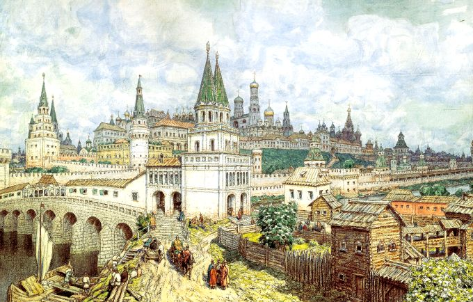
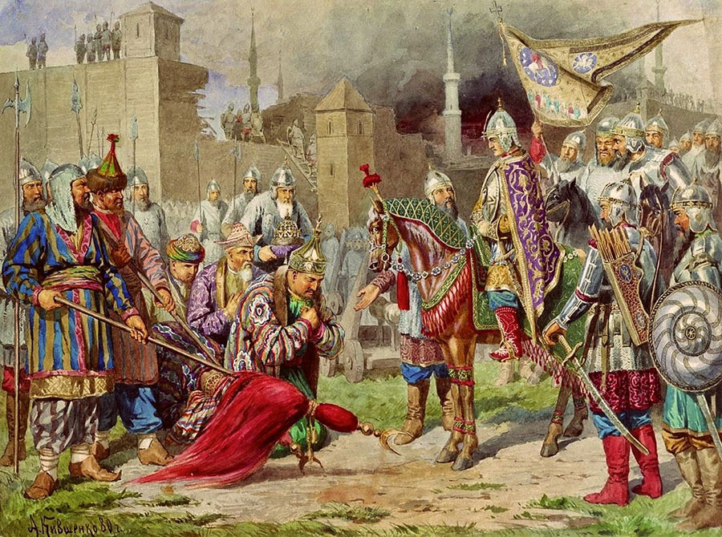
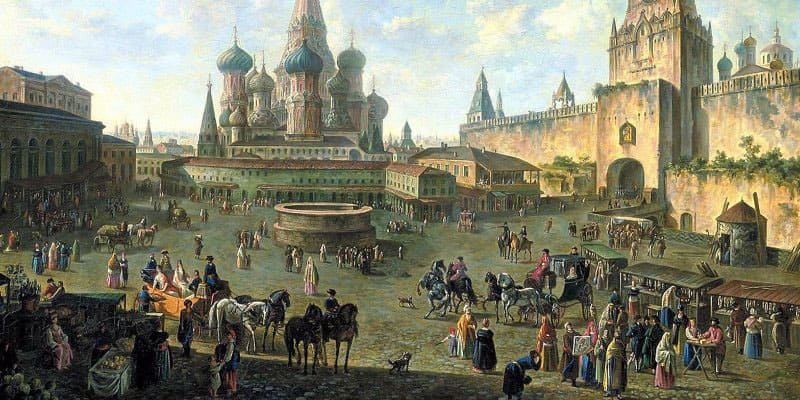
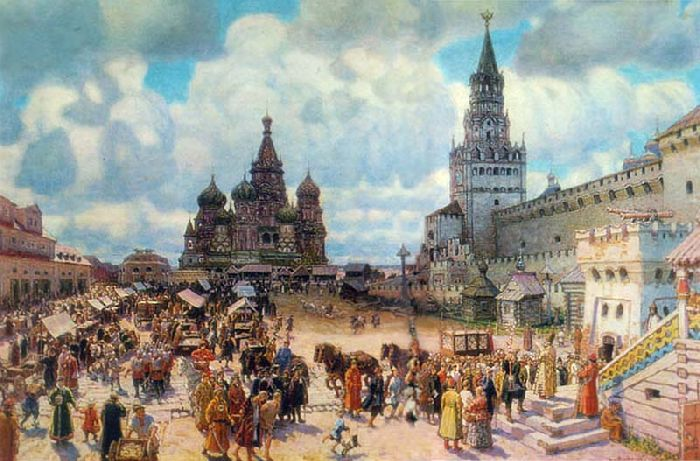
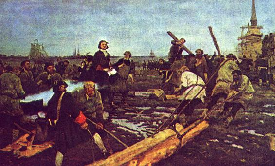

В 1448 году произошло провозглашение великим московским князем Василием II независимости Русской православной церкви от Константинопольского патриархата, подозреваемого в ереси и неспособности к эффективному управлению обширной Русской митрополией. В то время святитель Евфимий II (архиепископ Новгородский), со всей полунезависимой Новгородской республикой, добровольно признавали себя в сфере влияния Московского митрополита. В 1450 году московские войска разбили ордынцев на реке Битюге в глубине степей.
После захвата в 1453 году Константинополя турками, деятельность константинопольской вселенской патриархии была восстановлена далеко не сразу и не в полном объёме. Однако в 1470 году Новгород запросил нового архиепископа не у московского митрополита, а у константинопольского патриарха. Одновременно хан Большой Орды Ахмат дал ярлык на Новгород польскому королю и великому князю литовскому Казимиру IV. Тогда московские войска вторглись в Новгородскую землю и в 1471 году разбили новгородцев на реке Шелонь, а в 1478 году Новгородская земля была полностью присоединена к Москве: власть Москвы распространилась до побережья Северного Ледовитого океана и Урала. При этом Новгород в 1494 году перестал быть членом Ганзейского союза.
В 1472 году ордынцы были разбиты под Алексином, с чем часть историков связывают освобождение подвластных Москве земель от верховной власти Орды. Образование единого независимого Русского государства традиционно связывается с присоединением Новгорода в 1478 году и окончательной ликвидацией монголо-татарского ига в 1480 году (Стояние на Угре). После 180-летней борьбы было захвачено Тверское княжество (1485). После успешного похода на Казань в 1487 году Иван III принял титул «царя болгарского». Эти успехи привлекли на сторону московского князя удельных русских князей с их землями из Великого княжества Литовского (в том числе бежавших в Литву после поражения в междоусобице 1425—1453 годов), что стало причиной серии русско-литовских войн. В результате победы в войне 1500—1503 годов под власть Москвы перешли северские земли с Брянском и Черниговом, всего около трети территории Великого княжества Литовского.
С Ивана III начинается раздача земель в условное держание (поместье), сначала пожизненное, затем наследственное. В 1497 году издан общерусский Судебник, первый систематизированный свод законов в России со времён «Русской правды» XI века, в частности ограничивший переход крестьян осенним Юрьевым днём. При Иване III в России создаются первые органы центрального государственного управления — Приказы. Правнук Дмитрия Донского Иван III Васильевич женился на наследнице Византийских императоров Софье Палеолог, сделал Великокняжеской печатью двуглавый орёл как символ преемственности Россией могущества Византийской империи (Москва — третий Рим).
Сын Ивана III Василий III завершил объединение не подчинённых Литве русских земель, присоединив к Москве Псков (1510) и Рязань (1521). У Литвы был также отвоёван Смоленск (1514). Продолжались войны с Казанским ханством.
Правление Елены Глинской, жены Василия III и регентши малолетнего Ивана IV, первой после княгини Ольги правительницы единого русского государства, отмечено проведением первой централизованной денежной реформы в России (1534), в результате реформы была введена единая валюта: серебряная деньга, создана единая система денежного обращения; завершена русско-литовская война (1534—1537) и заключён выгодный для России мир.
В 1547 году великий князь московский Иван IV Грозный венчался на царство и стал, таким образом, первым российским царём. Новый титул позволял занять существенно иную позицию в дипломатических сношениях с Западной Европой. Великокняжеский титул переводился как «великий герцог», титул же «царь» в иерархии стоял наравне с титулом император.
С 1549 года вместе с «Избранной радой» (А. Ф. Адашев, митрополит Макарий, А. М. Курбский, протопоп Сильвестр и др.) Иван IV осуществил ряд реформ, направленных на централизацию государства и построение общественных институтов.
В 1549 году был созван первый сословно-представительный орган — Земский собор. В 1550 году принят новый Судебник. В 1551 году был проведён Стоглавый собор, по итогам которого был принят Стоглав. Было создано первое регулярное войско, вооружённое огнестрельным оружием — стрелецкое войско. В 1555—1556 годах Иван IV отменил кормления и принял Уложение о службе.
В начале 1550-х годов были также проведены земская и губная (начата правительством Елены Глинской) реформы, перераспределившая часть полномочий наместников и волостелей, в том числе судебных, в пользу выборных представителей черносошного крестьянства и дворянства.
В 1563 году царём Иваном IV был основан Московский печатный двор, где в 1564 году первыми книгопечатниками Иваном Фёдоровым и Петром Мстиславцем была напечатана первая русская книга «Апостол». Была составлена Книга Большому Чертежу — первый известный полный свод географических и этнографических сведений о России и сопредельных государствах. Был также создан Лицевой летописный свод — самый крупный в средневековой истории России исторический труд, представляющий собой летописный свод событий мировой и русской истории. Продолжало оформляться крепостное право, с 1581 года стали вводиться заповедные лета, когда переход крестьян был запрещён даже в Юрьев день.
Иван Грозный завоевал обширные территории в Поволжье (в 1552 году — Казанское ханство, в 1556 — Астраханское). Волга полностью становится российской рекой, Россия получила выход к Каспийскому морю. В русское подданство переходят башкиры, на их землях основывается Уфа. Основывается Архангельск — стратегический порт на берегу Северного Ледовитого океана. Начинается завоевание Западной Сибири (Поход Ермака 1581—1585). Распространилось российское влияние и на Северный Кавказ (казачество, договоры с Кабардой). В честь завоевания Казани и Астрахани в Москве был построен Храм Василия Блаженного, ставший одним из главных символом Москвы и всей России.
На западном направлении московским войскам сначала также сопутствовали успехи (Ливонская война). На начальном этапе войны (1558—1561) был разгромлен Ливонский орден, однако его глава принял покровительство Великого княжества Литовского. Тогда Россия вступила в войну с последним, особенно тяжёлым для Литвы стала потеря Полоцка (1563). Будучи не в состоянии вести войну с Россией в одиночестве Литва пошла на объединение с Польшей в Речь Посполитую, по которой к Польше отходили все южнорусские земли (1569).
В то же время в среде московской знати, чью значительную часть составляли потомки бывших литовских подданных, настаивавших на продолжении войн на южном, турецком направлении, зреет недовольство. Внезапная смерть царицы Анастасии, стремление Ивана Грозного к абсолютизации своей власти, и измена князя Курбского, приводит к ликвидации Избранной рады, и введению системы государственного террора — опричнины (1565 год). Формировалась монархическая идеология (царизм, самодержавие). Опричнина вылилась в многолетний массовый террор, подорвала экономику, веру знати и народа во власть и в конечном счёте стала одной из причин Смутного времени в начале XVII века. Практиковались жестокие репрессии в отношении неблагонадёжных элементов: боярские опалы, новгородский погром. Однако сожжение Москвы крымским ханом в 1571 году продемонстрировало слабость опричнины как орудия государевой власти и подтолкнуло царя к её отмене в 1572 году.
Южные русские земли на протяжении XVI и XVII веков подвергались набегам степных кочевников и крымских татар, продававших захваченных пленников на невольничьих рынках. От их набегов России пришлось защищаться строительством вдоль южных рубежей мощной Засечной черты. В 1571 году крымский хан Девлет I Герай с огромным войском сжёг Москву, а большую часть её жителей уничтожил или увёл в плен. В следующем 1572 году русское войско в битве при Молодях (в нескольких десятках километрах от Москвы) под руководством князей Михаила Воротынского и Дмитрия Хворостинина уничтожило 120-тысячное крымско-турецкое войско, шедшее на Москву, что позволило России сохранить независимость, а также завоёванные ранее территории в Поволжье.
Объединение Польши и Литвы в одно государство сделало возможным их совместные контрнаступательные действия. России с трудом удалось отстоять Псков (1582). Война закончилась в 1583 году потерей Россией всех захваченных ранее земель, а также выхода к Балтийскому морю. Многолетняя безрезультатная Ливонская война, разорительный опричный террор, привели экономику государства в упадок (Поруха).
После смерти Ивана Грозного на престол вступил его сын Фёдор I Иоаннович, при этом страной фактически управлял регентский совет, где наиболее сильным влиянием пользовался Борис Годунов, являвшийся фактическим правителем Русского государства.
В 1589 году учреждён Московский патриархат, избран первый патриарх Иов; активно велось строительство городов на новых территориях в Поволжье, Сибири и Диком поле: (Самара, Саратов, Царицын, Воронеж, Тобольск и др.), а также Смоленская крепостная стена, считавшаяся «каменным ожерельем земли русской», построенная по проекту Фёдора Коня.
В целях освоения Дикого Поля и борьбы с крымско-ногайскими набегами уже при Фёдоре создаётся Белгородская черта, в которую входят такие крепости как Курск и Воронеж. В 1591 году крымско-татарские орды в последний раз осаждали Москву, но были разбиты. После войны со Швецией был возвращён выход к Балтийскому морю. К 1598 году окончательно завоёвывается Западная Сибирь.
В 1591 году при невыясненных обстоятельств (предположительно по приказу Бориса Годунова) погиб младший сын Ивана Грозного царевич Дмитрий. Царь Фёдор Иоаннович умер в 1598 году, не оставив потомков, на этом правление династии Рюриковичей в России закончилось. После добровольного отказа жены умершего царя Фёдора, Ирины Годуновой от царства, Борис Годунов избран Земским собором царём в 1598 году.
Первые годы XVII века были неурожайными, произошло восстание Хлопка, ставшее предвестником Смутного времени. Возник слух, что «невинноубиенный» царевич Дмитрий (сын Ивана Грозного) чудесным образом спасся и желает взойти на престол. Сыгравший его роль самозванец вошёл в историю под именем Лжедмитрий I. Его опорой были наиболее экономически развитые юго-западные районы России (Северщина). Победоносно войдя в Москву после смерти брата жены последнего царя-Рюриковича Бориса Годунова, Лжедмитрий в 1605 году венчался на царство. Однако польская поддержка крайне негативно повлияла на его восприятие боярами и народом. Новый царь был признан ненастоящим и свергнут боярской группировкой во главе с Василием Шуйским, который и взошёл на престол.
Несмотря на то, что Василий Шуйский принадлежал династии Рюриковичей (суздальская ветвь), поддержкой в народе он не пользовался. На юге государства вспыхнуло восстание Болотникова, участников которого называли «ворами». Восстание было подавлено, но объявился новый самозванец — Лжедмитрий II, к которому примкнули бунтовщики. Для борьбы с мятежом Шуйский обратился к помощи Швеции, в обмен на уступку части территории. Русско-шведское войско под командованием Михаила Скопин-Шуйского нанесла ряд поражений повстанцам и поддерживающим их полякам, освободив русские города, и сняв блокаду Москвы. Лжедмитрий II бежал, а остатки польских отрядов ушли к польскому королю. Тогда Польша, ранее поддерживающая обоих Лжедмитриев, решила напрямую начать войну с ослабленной Россией. Поляки осадили Смоленск, который оборонялся почти два года, задержав основные польские войска. Однако после внезапной смерти Скопин-Шуйского в Москве, русские войска были разбиты в Клушинской битве. Неудачи привели к свержению Василия Шуйского и занятию поляками Москвы.
Формально власть принадлежала Семибоярщине, но открыто обсуждались варианты присяги польскому королю. Швеция сменила свою позицию на враждебную по отношению к России и заняла Новгород. Патриарх Гермоген убеждал всех русских людей бороться против иноземных захватчиков и освободить Москву. Сторонники Лжедмитрия II заняли антипольскую позицию (поскольку Семибоярщина поддержала кандидатуру польского царевича Владислава на русский трон). Лжедмитрий II начал борьбу против поляков, однако вскоре был убит своими людьми. Поход первого народного ополчения на Москву окончился провалом, но уже второе народное ополчение Минина и Пожарского смогло освободить в 1612 году Москву от поляков. Этот день (4 ноября) ныне празднуется как День народного единства.
Для борьбы с последствиями Смуты был созван Земский собор 1613 года, на котором на царство был призван Михаил Романов — первый из династии Романовых, который через свою родственницу Анастасию Романову (первую жену Ивана Грозного) являлся ближайшим родственником угасшей династии Рюриковичей. Также он был «выгодным царём» для бояр, поскольку юноша, изначально не желавший нести бремя власти, мог легко стать игрушкой в руках бояр, которые в итоге фактически и правили. Всё изменилось после обмена пленными после Смуты — в июне 1619 года вернулся отец юного царя (будущий Патриарх Филарет), с которым Михаил всегда советовался в государственных делах. Между тем борьба с мятежниками из числа казаков и польскими интервентами не закончилась. В 1614 году были разгромлены мятежные казаки и казнены атаман Заруцкий вместе с сыном Лжедмитрия II, а жена обоих лжецарей Марина Мнишек заключена в темницу.
В 1618 году польский король Владислав вновь попытался взять Москву и завладеть русским троном. Однако поляки не смогли взять Москву. В сложившийся ситуации стороны подписали Деулинское перемирие. России пришлось уступить Польше Смоленск и Северщину, однако независимость России была сохранена. В 1632 году Россия начала новую войну, целью которой было вернуть земли утраченные в ходе Смуты. Русские не смогли взять Смоленск и вернуть территории, однако по итогам нового мирного договора, польский король окончательно отказался от прав на русский престол.
В то же время на востоке, продолжается начатое ещё при Иване Грозном покорение Сибири: заложены города Красноярск (1628), Якутск (1632), Чита (1653), Иркутск (1661). В 1639 году русские землепроходцы достигают берегов Тихого океана, а в 1643 году Байкала. В 1648 году казак Семён Дежнёв по морю огибает Чукотку и открывает пролив, позже названный Беринговым. Освоение Сибири осуществлялось силами казаков, землепроходцев и промышленников. К крупнейшим землепроходцам относятся Ерофей Хабаров, Василий Поярков, Владимир Атласов. Русская колонизация встречала незначительное сопротивление. Местное население принуждалось к выплате пушного налога (ясак) в обмен на защиту казаков от набегов других племён. Единственным значительным препятствием при присоединении Дальнего Востока стал Китай, с которым уже в 1689 году был заключён Нерчинский договор о разграничении территорий.
Соборное уложение 1649 года впервые в истории русского законодательства устанавливает разделение норм по отраслям права. Кроме того, им было закреплено крепостное право.
В 1654 году запорожские казаки Богдана Хмельницкого, поднявшие восстание против Польши, присягнули на верность русскому царю Алексею Михайловичу. Этот акт привёл к очередной многолетней русско-польской войне. В первые годы русские войска успешно заняли значительную часть Речи Посполитой, взяли Смоленск, заняли Киев, нанесли поражение армии литовского княжества и взяли столицу ВКЛ Вильно. Однако раскол среди украинских казаков, часть из которых перешла на сторону Польши, и контрнаступление польской армии привели к потере части ранее завоёванных территорий. Русские смогли удержать территории на левом берегу Днепра. В 1667 году между странами было подписано Андрусовское перемирие. В результате победы в войне Киев, Смоленск, и Левобережная Украина были присоединены к России.
Церковная реформа патриарха Никона провоцирует раскол в 1656—1666 годах. Ревнители старины уходят в оппозицию и подвергаются гонениям, а в России усиливается вестернизация: появляются «полки нового строя» (рейтары), в высших слоях общества усиливается интерес к западной культуре (театр, портретная живопись).
Разорительная война с Польшей, церковный раскол и закрепощение крестьян привели к крупнейшему в допетровскую эпоху казацко-крестьянскому восстанию Степана Разина (1670—1671), охватившему всё Поволжье и юг. Восстание было подавленно царскими войсками, его руководители были казнены.
Во время непродолжительного правления Фёдора III Алексеевича решением Земского собора была отменена система местничества и распределение должностей в государственном аппарате официально перестало зависеть от знатности рода, были уничтожены Разрядные книги, введены Родословные книги. В 1676—1681 годах под руководством князя Григория Ромодановского на Украине велась война против Османской империи, был заключён выгодный для России Бахчисарайский мир, согласно которому Турция признала за Россией Левобережную Украину и Киев. Конец XVII века был отмечен зарождением системы высшего образования: было основано первое высшее учебное заведение в России — Славяно-греко-латинская академия.
После смерти молодого Фёдора, был организован Стрелецкий бунт, в результате которого регентшей при малолетних Иване и Петре стала княжна Софья Алексеевна, правление которой было отмечено заключением «вечного мира» с Польшей (1686) и Нерчинского договора с Китаем — первого русско-китайского договора; присоединение к Священной лиге (1686) в борьбе против Османской империи.
В 1689 году царевна Софья была свергнута Петром I и заключена в монастырь. Пётр стал единоличным правителем (с учётом недееспособности его брата соправителя Ивана V, умершего в 1696 году). Пётр продолжал войну с Турцией, и в результате Азовских походов 1695-96 годов, взял Азов, получив выход в Азовское море, закреплённый по мирному договору с Турцией в 1700 году.
| Дата | Событие |
|---|---|
| 1480 г. | "Великое стояние" на р.Угре русских и татарских войск. Отказ Ивана III платить дань Орде. Конец Ордынского ига |
| 1483 г. | Поход московского воеводы Ф.Курбского в Зауралье на Иртыш до г.Искера, затем вниз по Иртышу к Оби в Югорскую землю. Покорение Пелымского княжества |
| 1485 г. | Присоединение Тверского княжества к Москве |
| 1487-1489 г. | Покорение Казанского ханства. Взятие Казани (1487), принятие Иваном III титула "Великий князь Булгарский". На казанский престол возведен ставленик Москвы хан Мухаммед-Эмин. Введение поместной системы землепользования |
| 1489 г. | Поход на Вятку и окончательное присоединение Вятской земли к Москве. Присоединение Арской земли (Удмуртии) |
| 1491 г. | "Поход в Дикое поле" 60-тысячного русского войска на помощь крымскому хану Менгли-Гирею против ханов Большой Орды |
| 1492 г. | Суеверные ожидания "конца света" в связи с окончанием (1 марта) 7-го тысячелетия по счету "от сотворения мира". Сентябрь - решение Московского церковного собора о переносе даты начала года на 1 сентября. Первое использование титула "самодержец" в послании к великому князю Ивану III Васильевичу. Основание крепости Ивангород на р.Нарве |
| 1492 - 1494 г. | 1-я война Ивана III c Литвой. Присоединение Вязьмы и Верховских княжеств к Москве |
| 1496 - 1497 г. | Война Москвы со Швецией |
| 1497 г. | Судебник Ивана III |
| 1499 - 1501 г. | Поход московских воевод Ф.Курбского и П.Ушатого в Северное Зауралье и в низовья Оби |
| Дата | Событие |
|---|---|
| 907 г. | Поход князя Олега на Царьград |
| 911 г. | Заключение договора Руси с Византией |
| 1500 - 1503 г. | 2-я война Ивана III c Литвой за Верховские княжества. Присоединение к Москве Северской земли |
| 1501 - 1503 г. | Война России с Ливонским орденом |
| 1503 г. | Присоединение к Москве половины Рязанского княжества (в т.ч. Тулы) Перемирие с Литвой и присоединение к России Чернигова, Брянска и Гомеля (почти треть территории Великого княжества Литовского) Перемирие России с Ливонией |
| 1505 г. | Антирусское выступление в Казани. Начало Казанско-русской войны (1505-1507) |
| 1505 - 1533 г. | Правление великого князя Василия III Ивановича |
| 1506 г. | Неудачная осада Казани |
| 1507 г. | Первый набег крымских татар на южные рубежи России |
| 1507 - 1508 г. | Война России с Литвой |
| 1508 г. | Зключение со Швецией мирного договора на 60 лет |
| 1510 г. | Ликвидация самостоятельности Пскова |
| 1512 - 1522 г. | Война России с Великим княжеством Литовским |
| 1512 г. | "Вечный мир" с Казанью Безуспешная осада Смоленска |
| 1513 г. | Присоединение к Московскому княжеству Волоцкого удела |
| 1514 г. | Взятие войсками великого князя Василия III Ивановича Смоленска и присоединение Смоленских земель |
| 1519 г. | Поход русского войска на Вильно (Вильнюс) |
| 1520 г. | Заключение перемирия с Литвой на 5 лет |
| 1521 г. | Поход крымских и казанских татар во главе с Мухаммед-Гиреем (Магмет-Гиреем), ханом Крыма и казанским ханом Саип-Гиреем (Сагиб-Гиреем) на Москву. Осада Москвы крымцами. Полное присоединение к Москве Рязанского княжества |
| 1522 г. | Арест новгород-северского князя Василия Шемячича. Присоединение к Москве Новгород-Северского княжества |
| 1523 - 1524 г. | 2-я Казанско-русская война |
| 1523 г. | Антирусские выступления в Казани. Поход русских войск в земли Казанского ханства. Постройка на р.Суре крепости Васильсурск |
| 1524 г. | Новый русский поход на Казань. Мирные переговоры Москвы и Казани. Провозглашение казанским царем Сафа-Гирея. |
| 1529 г. | Русско-казанский мирный договор |
| 1530 г. | Поход русского войска на Казань |
| 1533 - 1584 г. | Правление великого князя и царя (с 1547) Ивана IV Васильевича Грозного |
| 1533 - 1538 г. | Регентство матери великого князя Ивана IV Васильевича Елены Глинской (1538+) |
| 1538 - 1547 г. | Регентство матери великого князя Ивана IV Васильевича Елены Глинской (1538+) |
| 1544 - 1546 г. | Присоединение к России земель мари и чувашей, поход в земли Казанского ханства |
| 1547 г. | Принятие великим князем Иваном IV Васильевичем царского титула (венчание на царство). Пожары и народные волнения в Москве |
| 1547 - 1549 г. | Политическая программа Ивана Пересветова: создание постоянного стрелецкого войска, опора царской власти на дворян, захват Казанского ханства и раздача его земель дворянам |
| 1547 - 1550 г. | Неудачные походы (1547-1548, 1549-1550 ) русских войск на Казань |
| 1549 г. | Первые известия о казацких городках на Дону. Образование посольского приказа. Созыв первого Земского собора |
| 1550 г. | Судебник (свод законов) Ивана Грозного |
| 1551 г. | "Стоглавый" собор. Одобрение программы реформ (за исключением секуляризации церковных земель и введения светского суда для духовных лиц) 3-й Казанский поход Ивана Грозного |
| 1552 г. | 4-й (Великий) поход царя Ивана IV Васильевича на Казань. Неудачный поход крымских войск к Туле. Осада и взятие Казани. Ликвидация Казанского ханства |
| 1552 - 1558 г. | Подчинение территории Казанского ханства |
| 1553 г. | Неудачный поход 120-тысячного войска князя Ногайской Орды Юсуфа на Москву. |
| 1554 г. | 1-й поход русских воевод на Астрахань |
| 1555 г. | Отмена кормлений (завершение губной и земской реформы) |
| 1555 - 1557 г. | Война России со Швецией |
| 1555 - 1560 г. | Походы русских воевод на Крым |
| 1556 г. | Взятие Астрахани и присоединение к России Астраханского ханства. Переход под власть России всего Поволжья. Принятие "Уложения о службе" - регулирование службы дворян и норм поместного жалования |
| 1557 г. | Присяга послов правителя Кабарды на подданство русскому царю. Признание князем Большой Ногайской Орды Исмаилом вассальной зависимости от России. Переход западных и центральных башкирских племен (подданных Ногайской орды) в подданство русскому царю. |
| 1560 г. | Победа русского войска при Эрмесе, взятие замка Феллин Победа А.Курбского нал ливонцами под Венденом Падение правительства Избранной рады, опала А.Адашева |
| 1563 г. | Взятие Полоцка царем Иваном IV |
| 1564 г. | Издание "Апостола" Иваном Федоровым |
| 1565 г. | Введение царем Иваном IV Грозным опричнины. Начало опричных гонений |
| 1566 г. | Завершение строительства Большой засечной черты (Рязань-Тула-Козельск и Алатырь-Темников-Шацк-Ряжск). Основан г.Орел |
| 1567 г. | Союз России со Швецией Постройка крепости Терки (Терский городок) при слиянии рек Терека и Сунжи. Начало продвижения России на Кавказ |
| 1568 - 1569 г. | Массовые казни в Москве. Уничтожение по приказу Ивана Грозного последнего удельного князя Андрея Владимировича Старицкого |
| 1569 г. | Поход крымских татар и турок на Астрахань, безуспешная осада Астрахани |
| 1570 г. | Карательные походы Ивана Грозного На Тверь, Новгород и Псков. Разорение крымским ханом Давлет-Гиреем Рязанской земли. Начало русско-шведской войны. Неудачная осада Ревеля |
| 1571 г. | Поход крымского хана Девлет-Гирея на Москву. Взятие и сожжение Москвы. Бегство Ивана Грозного в Серпухов, Александрову слободу, затем в Ростов. |
| 1572 г. | Переговоры Ивана Грозного с Девлет-Гиреем. Новый поход крымских татар на Москву. Победа воеводы М.И.Воротынского на р.Лопасне. Отступление хана Девлет-Гирея. Упразднение Иваном Грозным опричнины. Казнь руководителей опричнины |
| 1574 г. | Основание г.Уфы |
| 1575 - 1577 г. | Походы русских войск в Северную Ливонию и Лифляндию |
| 1575 - 1576 г. | Номинальное правление Симеона Бекбулатовича (1616+), касимовского хана, провозглашенного Иваном Грозным "великим князем Всея Руси" |
| 1576 г. | Основание г.Самары Захват ряда опорных крепостей в Ливонии (Пернов (Пярну), Венден, Пайду и др.) |
| 1577 г. | Неудачная осада Ревеля |
| 1579 г. | Взятие Стефаном Баторием Полоцка, Великих Лук |
| 1580-е г. | Первые известия о казацких городках на Яике |
| 1580 г. | 2-й поход Стефана Батория на русские земли и взятие им Великих Лук. Взятие Корелы шведским полководцем Делагарди Решение церковного собора о запрете приобретать земли церквям и монастырям |
| 1581 г. | Взятие шведскими войсками русских крепостей Нарвы и Ивангорода Отмена Юрьева дня. Первое упоминание о "заповедных" годах Убийство царем Иваном IV Грозным своего старшего сына Ивана |
| 1581 - 1582 г. | Осада Стефаном Баторием Пскова и его оборона И.Шуйским |
| 1581 - 1585 г. | Поход казацкого атамана Ермака в Сибирь и разгром Сибирского ханства Кучума |
| 1582 г. | Ям-Запольское перемирие России с Речью Посполитой на 10 лет. Переход во владение Польшей Ливонии и Полоцка Переселение части донских казаков в урочище Гребни на Сев. Кавказе |
| 1582 - 1584 г. | Массовые восстания народов Среднего Поволжья (татары, мари, чуваши, удмурты) против Москвы Взятие русскими войсками Нарвы и Дерпта |
| 1583 г. | Плюсское перемирие России с Швецией на 10 лет с уступкой Нарвы, Яма, Копорья, Ивангорода. Завершение Ливонской войны, длившейся (с перерывами) 25 лет |
| 1584 - 1598 г. | Правление царя Федора Иоанновича |
| 1586 - 1618 г. | Переговоры Ивана Грозного с Девлет-Гиреем. Новый поход крымских татар на Москву. Победа воеводы М.И.Воротынского на р.Лопасне. Отступление хана Девлет-Гирея. Упразднение Иваном Грозным опричнины. Казнь руководителей опричнины |
| 1587 г. | Возобновление отношений между Грузией и Россией |
| 1589 г. | Основание крепости Царицын у волока между Доном и Волгой Учреждение в России патриаршества |
| 1590 г. | Основание г.Саратова |
| 1590 - 1593 г. | Успешная война России со Швецией |
| 1591 г. | Гибель царевича Дмитрия Ивановича в Угличе, восстание горожан |
| 1592 - 1593 г. | Указ об освобождениии от повинностей и налогов земель помещиков, несущих военную службу и живших в своих поместьях (появление "белых земель"). Указ о запрещении крестьянского выхода. Окончательное прикрепление крестьян к земле |
| 1595 г. | Тявзинский мир со Швецией. Возврат России городов Ям, Копорье, Ивангород, Орешек, Ниеншане. Признание контроля Швеции над балтийской торговлей России |
| 1597 г. | Указ о кабальных холопах (пожизненность их состояния без возможности выплаты долга, прекращение службы со смертью господина). Указ о пятилетнем сроке сыска беглых крестьян (урочные годы) |
| 1598 г. | Смерть царя Федора Иоанновича. Прекращение династии Рюриковичей; Принятие Бабиновской дороги как официального правительственного пути в Сибирь (вместо старой Чердынской дороги); |
| Дата | Событие |
|---|---|
| 1598 - 1605 г. | Правление царя Бориса Годунова |
| 1601 - 1603 г. | Голод в России. Частичное восстановление Юрьева дня и ограниченного выхода крестьян |
| 1604 г. | Построение отрядом из Сургута по просьбе князя томских татар крепости Томск. Появление в Польше самозванца Лжедмитрия, его поход во главе казаков и наемников на Москву |
| 1605 г. | Правление царя Федора Борисовича Годунова (1605х) |
| 1605 - 1606 г. | Правление самозванца Лжедмитрия I Подготовка нового Уложения, разрешающего крестьянский выход |
| 1606 г. | Заговор бояр во главе с князем В.И.Шуйским. Свержение и убийство Лжедмитрия I. Провозглашение В.И.Шуйского царем |
| 1606 - 1610 г. | Правление царя Василия IV Ивановича Шуйского |
| 1606 - 1607 г. | Восстание И.И.Болотникова и Ляпунова под девизом "царя Дмитрия!" |
| 1606 г. | Появление самозванца Лжедмитрия II |
| 1607 г. | Указы о "добровольных холопах", о 15-летнем сроке сыска беглых крестьян и о санкциях за прием и держание беглых крестьян. Отмена реформ Годунова и Лжедмитрия I |
| 1608 г. | Победа Лжедмитрия II над правительственными войсками под предводительством Д.И.Шуйского под Болховом. Создание Тушинского лагеря близ Москвы. |
| 1608 - 1610 г. | Безуспешная осада Троице-Сергиева монастыря польскими и литовскими войсками |
| 1609 г. | Вступление польского короля Сигизмунда III в пределы русского государства. Осада поляками Смоленска. Обращение за помощью против поляков к шведскому королю Карлу IX ценой территориальных уступок. Продвижение шведских войск к Новгороду. Наречение в Тушинском лагере митрополита Филарета (Федора Никитича Романова) патриархом. Разброд в Тушинском лагере. Бегство Лжедмитрия II. |
| 1610 г. | Клушинская битва (24.06) русских и польских войск. Ликвидация Тушинского лагеря. Новая попытка Лжедмитрия II организовать поход на Москву. Гибель Лжедмитрия II. Отстранение Василия Шуйского от престола. Вступление поляков в Москву |
| 1610 - 1613 г. | Междуцарствие ("Семибоярщина") |
| 1611 г. | Разгром ополчения Ляпунова. Падение Смоленска после двухлетней осады. Пленение патриарха Филарета, В.И.Шуйского и др. |
| 1611 - 1617 г. | Шведская интервенция в Россию; |
| 1612 г. | Сбор нового ополчения Козьмы Минина и Дмитрия Пожарского Освобождение Москвы, разгром польских войск. Смерть бывшего царя Василия Шуйского в плену в Польше. |
| 1613 г. | Созыв Земского Собора в Москве. Избрание на царство Михаила Романова |
| 1613 - 1645 г. | Правление царя Михаила Федоровича Романова |
| 1615 - 1616 г. | Ликвидация казацкого движения атамана Баловня |
| 1617 г. | Столбовский мир со Швецией. Возврат России новгородских земель, потеря выхода к Балтике - города Корела (Кексгольм), Копорье, Орешек, Ям, Ивангород отошли к Швеции |
| 1618 г. | Деулинское перемирие с Польшей. Переход смоленских земель (в том числе Смоленска), кроме Вязьмы, черниговских и новгород-северских земель с 29 городами к Польше. Отказ королевича Польши Владислава от притязаний на русский престол. Избрание патриархом Филарета (Федора Никитича Романова). |
| 1619 - 1633 г. | Патриаршество и правление Филарета (Федора Никитича Романова) |
| 1620 - 1624 г. | Начало проникновения русских в Восточную Сибирь. Поход на р.Лену и вверх по Лене до земли бурят |
| 1621 г. | Учреждение Сибирской епархии |
| 1632 г. | Организация в российской армии войск "иноземного строя". Основание А.Виниусом первого железоделательного завода в Туле. Война России с Польшей за возвращение Смоленска Основание Якутского острога (на совр. месте с 1643 года) |
| 1633 - 1638 г. | Поход казаков И.Перфильева и И.Реброва с низовьев Лены на реки Яна и Индигирка |
| 1636 г. | Основание крепости Тамбов |
| 1637 г. | Взятие донскими казаками турецкой крепости Азов в устье Дона |
| 1638 г. | Переход восставшего против поляков гетмана Я.Остранина с войском на территорию России. Начало формирование слободской Украины (районы Харькова, Курска и др. между Доном и Днепром) |
| 1638 - 1639 г. | Поход казаков П.Иванова из Якутска в верховья Яны и Индигирки |
| 1639 - 1640 г. | Поход казаков И.Москвитина из Якутска к Ламскому (Охотскому_ морю, выход к Тихому океану. Завершение широтного пересечения Сибири, начатого Ермаком |
| 1639 г. | Основание первого стекольного завода в России |
| 1641 г. | Успешная оборона донскими казаками крепости Азов в устье Дона ("Азовское сидение") |
| 1642 г. | Прекращение обороны крепости Азов. Решение Земского собора о возврате Азова Турции. Оформление дворянского военнослужилого сословия |
| 1643 г. | Ликвидация Кодского княжества хантов на правобережье Оби. Морской поход казаков во главе с М.Стародухиным и Д.Здыряном с Индигирки на Колыму. Выход русских служилых и промышленных людей к Байкалу (поход К.Иванова) |
| 1643 - 1646 г. | Поход В.Пояркова из Якутска на Алдан, Зею, Амур к Охотскому морю |
| 1645 - 1676 г. | Правление царя Алексея Михайловича Романова |
| 1646 г. | Замена прямых налогов налогом на соль. Отмена налога на соль и возврат к прямым налогам вследствие массовых волнений. Перепись тяглового и частично нетяглового населения |
| 1648 - 1654 г. | Сооружение Симбирской засечной черты (Симбирск-Карсун-Саранск-Тамбов). Постройка крепости Симбирск (1648) |
| 1648 г. | Плавание С.Дежнева от устья р.Колымы до устья р.Анадыри через пролив, отделяющий Евразию от Америки "Соляной бунт" в Москве. Восстания горожан в Курске, Ельце, Томске, Устюге и др. Уступки дворянам: созыв Земского собора для принятия нового Уложения, отмена взыскания недоимок |
| 1649 г. | Соборное Уложение Алексея Михайловича . Окончательное оформление крепостного права (введение бессрочного сыска беглых), ликвидация "беломестных слобод" (феодальных владений в городах, освобожденных от налогов и повинностей). Узаконение розыска по доносу на умысел против царя или его оскорбление ("Слово и дело государево") |
| 1649 - 1652 г. | Походы Е.Хабарова на Амур и Даурскую землю. Первые столкновения русских с маньчжурами Создание на Слободской Украине территориальных полков (острогожский, Ахтырский, Сумской, Харьковский) |
| 1651 г. | Начало церковной реформы патриархом Никоном. Основание Немецкой слободы в Москве. |
| 1651 - 1660 г. | Поход М.Стадухина по маршруту Анадырь-Охотск-Якутск. Установление связи северных и южных путей к Охотскому морю |
| 1652 - 1656 г. | Сооружение Закамской засечной черты (Белый Яр - Мензелинск) |
| 1652 - 1667 г. | Столкновения светской и церковной властей |
| 1653 г. | Решение Земского собора о принятии в подданство Украины и о начале войны с Польшей. Принятие торгового устава, регулирующего торговлю (единая торговая пошлина, запрет взимания проездных пошлин во владениях светских и духовных феодалов, ограничение крестьянской торговли торговлей с возов, повышение пошлин иностранных купцов) |
| 1654 - 1667 г. | Русско-польская война за Украину |
| 1654 г. | Утверждение церковным собором реформ Никона. Возникновение старообрядчества во главе с протопопом Аввакумом, начало раскола церкви. Утверждение Переяславской Радой Войска Запорожского договора (8.01.1654) о переходе Украины (Полтавщины, Киевщины, Черниговщины, Подолии, Волыни) к России с сохранением широкой автономии (неприкосновенность прав казачества, выборность гетмана, самостоятельная внешняя политика, неподсудность Москве, уплата дани без вмешательства московских сборщиков). Взятие русскими войсками Полоцка, Могилева, Витебска, Смоленска |
| 1655 г. | Взятие русскими войсками Минска, Вильно, Гродно, выход к Бресту |
| 1656 г. | Взятие Ниеншанца и Дерпта. Осада Риги. Перемирие с Польшей и объявление войны Швеции |
| 1656 - 1658 г. | Русско-шведская война за выход к Балтийскому морю |
| 1658 г. | Открытый конфликт Никона с царем Алексеем Михайловичем . Начало выпуска медных денег (выдача жалованья медными деньгами и сбор податей серебряными). Прекращение переговоров с Польшей, возобновление русско-польской войны. Вторжение русских войск на Украину |
| 1659г. | Поражение русских войск у Конотопа от гетмана Украины И.Выговского и крымских татар. Отказ Переяславской Рады утвердить Гадячский договор. Смещение гетмана И.Выговского и избрание гетманом Украины Ю.Хмельницкого. Утверждение Радой нового договора с Россией. Поражение русских войск в Белоруссии, измена гетмана Ю.Хмельницкого. |
| 1661 г. | Кардисский мир России со Швецией. Отказ России от завоеваний 1656 года, возврат к условиям Столбовского мира 1617 года |
| 1662 г. | "Медный бунт" в Москве |
| 1663 г. | Основание г.Пензы |
| 1665 г. | Реформы А.Ордин-Нащекина в Пскове: учреждение купеческих компаний, введение элементов самоуправления. Усиление позиций Москвы на Украине |
| 1666 г. | Лишение Никона сана патриарха и осуждение старообрядчества церковным собором. Постройка восставшими илимскими казаками нового Албазинского острога на Амуре (с 1672 г. принят в подданство России) |
| 1667 г. | Строительство кораблей для Каспийской флотилии. Новоторговый устав. Ссылка протопопа Аввакума в Пустозерский острог за "ереси" (критику) правителей страны. А.Ордин-Нащекин во главе Посольского приказа (1667-1671). Заключение А.Ордин-Нащекиным Андрусовского перемирия с Польшей. Осуществление раздела Украины между Польшей и Россией (переход Левобережной Украины под власть России) |
| 1667 - 1676 г. | Соловецкое восстание монахов-раскольников("Соловецкое сидение") |
| 1670 - 1671 г. | Восстание крестьян и казаков во главе с донским атаманом С.Разиным |
| 1672 г. | Первое самосожжение раскольников (в Нижнем Новгороде). Первый профессиональный театр в России. Указ о раздаче "диких полей" служилым и духовным лицам в "украинных" областях. Русско-польский договор о помощи Польше в войне с Турцией |
| 1673 г. | Поход русских войск и донских казаков на Азов |
| 1673 - 1675 г. | Походы русских войск против гетмана П.Дорошенко (походы на Чигирин), поражение от турецких и крымско-татарских войск |
| 1675 - 1678 г. | Посольская миссия России в Пекин. Отказ Циньского правительства рассматривать Россию как равноправного партнера |
| 1676 - 1682 г. | Правление царя Федора Алексеевича Романова |
| 1676 - 1681 г. | Русско-Турецкая война за Правобережную Украину |
| 1676 г. | Занятие русскими войсками столицы Правобережной Украины Чигирина. |
| 1677 г. | Победа русских войск над турками под Чигирином |
| 1678 г. | Русско-польский договор о продлении перемирия с Польшей на 13 лет. Соглашение сторон о подготовке "вечного мира". |
| 1679 - 1681 г. | Податная реформа. Переход к подворному обложению вместо посошного |
| 1681 - 1683 г. | Сеитовское восстание в Башкирии из-за насильственной христианизации. Подавление восстания с помощью калмыков |
| 1681 г. | Упразднение Касимовского царства. Бахчисарайский мирный договор России с Турцией и Крымским ханством. Установление русско-турецкой границы по Днепру. Признание за Россией Левобережной Украины и Киева. |
| 1682 - 1689 г. | Одновременное правление царевны-правительницы Софьи Алексеевны и царей Ивана V Алексеевича и Петра I Алексеевича |
| 1682 г. | Отмена местничества. Начало стрелецкого бунта в Москве. Установление правительства царевны Софьи. Подавление стрелецкого бунта. Казнь Аввакума и его сторонников в Пустозерске. |
| 1683 - 1684 г. | Сооружение Сызраньской засечной черты (Сызрань-Пенза) |
| 1686 г. | "Вечный мир" России с Польшей. Присоединение России к антитурецкой коалиции Польши, Священной империи и Венеции (Священная Лига) с обязательством России совершить поход на Крымское ханство |
| 1686 - 1700 г. | Война России с Турцией. Крымские походы В.Голицина |
| 1687 г. | Основание в Москве Славяно-греко-латинской академии |
| 1689 г. | Строительство Верхнеудинской крепости (совр. Улан-Удэ) у слияния рек Уды и Селенги Нерчинский договор России с Китаем. Установление границы по Аргуни - Становому хребту - р.Уде до Охотского моря Свержение правительства царевны Софьи Алексеевны |
| 1689 - 1696 г. | Одновременное правление царей Ивана V Алексеевича и Петра I Алексеевича |
| 1695 г. | Учреждение Преображенского приказа. Первый Азовский поход Петра I. Организация "кумпанств" для финансирования строительства флота, создание верфи на р.Воронеж |
| 1695 - 1696 г. | Восстания местного и казачьего населения в Иркутске, Красноярске и Забайкалье |
| 1696 г. | Смерть царя Ивана V Алексеевича |
| 1696 - 1721 г. | Правление царя и императора (с 1721) Петра I Алексеевичао |
| 1696 г. | Второй Азовский поход Петра I |
| 1697 - 1698 г. | "Великое посольство" Петра I в Германию, Голландию, Англию и Польшу |
| 1698 г. | Постройка крепости Таган-Рог (Таганрог). Стрелецкое востание и стрелецкие казни. Расформирование стрелецкого войска. Учреждение первого русского ордена (ордена Андрея Первозванного) |
| 1699 г. | Организация ратуши в Москве и земских изб в провинциях. Договоры о союзе с Данией и Саксонией против Швеции |
| Дата | Событие |
|---|---|
| 1700 г. | Введение нового летоисчисления в России (от Рождества Христова, а не от Сотворения мира). Поражение русских войск от шведов под Нарвой. Подписание в Стамбуле перемирия России с Турцией на 30 лет, по которому Азов остался за Россией, а "кубанская сторона" признана вассалом Турции |
| 1700 - 1721 г. | Северная война России и ее союзников со Швецией за шведские владения в Прибалтике |
| 1700 - 1702 г. | Строительство Каменского и Невьянского заводов на Урале |
| 1702 г. | Взятие русскими войсками крепости Нотебург у истока р.Невы (в 1323-1611 - русская крепость Орешек, после 1702 - Шлиссельбург) |
| 1703 г. | Выход первой русской газеты "Ведомости" в Москве. Взятие Б.Шереметевым крепости Ниеншанц в устье р.Невы. Закладка Петром I крепости Санкт-Петербург (Петропавловская крепость) |
| 1704 г. | Начало возведения укреплений на острове Котлин в Финском заливе (совр. Кронштадт). Взятие Петром I Нарвы. Взятие Б.Шереметевым Дерпта (Тарту). Нарвский договор России и Польши о действиях против Швеции |
| 1705 г. | Первый рекрутский набор в армию по всей России |
| 1708 г. | Губернская реформа. Переход короля Швеции Карла XII к Гродно. Начало отступления русского войска в Белоруссии. Поход Карла XII на Украину. Разгром царем Петром I шведского корпуса Левенгаупта и срыв похода шведов на Москву. |
| 1709 г. | Открытие Вышневолоцкого канала. Передвижение границы России в предгорья Горного Алтая. Сооружение в верховьях р.Оби Бийской крепости. Сожжение по приказу Петра I Запорожской сечи, перешедшей на сторону шведов. Полтавская битва. Разгром короля Швеции Карла XII |
| 1710 - 1713 г. | Русско-турецкая война |
| 1710 г. | Взятие русскими войсками Выборга, Риги и Ревеля. Открытие Анцыферовым и Козыревским островов Курильской гряды. Основание Александро-Невской Лавры в Санкт-Петербурге |
| 1711 г. | Учреждение Сената. Прутский поход Петра I в Молдавию. Прутский договор об уступке Азова Турции |
| 1712 г. | Начало функционирования Санкт-Петербурга как столицы России. Переселение гребенских казаков на левый берег Терека. Начало создания Кавказской укрепленной линии |
| 1713 г. | Основание Тульского оружейного завода. Адрианопольский мир России с Турцией. Подтверждение условий Прутского договора |
| 1713 - 1714 г. | Занятие русскими войсками Финляндии |
| 1714 г. | Указ об обязательном обучении дворянских детей с запретом венчать невыучившихся. Указ о единонаследии (майорате), окончательное уравнение боярских вотчин с поместьями. Победа русского флота над шведским при мысе Гангут |
| 1715 г. | Постройка линии крепостей Омск-Семипалатинск-Усть-Каменогорск (присоединение верховьев Иртыша к России) |
| 1716 г. | Указ о цыфирных школах. Воинский устав Петра I. Основание г.Омска |
| 1716 - 1717 г. | Хивинская экспедиция А.Черкасского |
| 1717 - 1721 г. | Учреждение первых коллегий (министерств) |
| 1718 - 1731 г. | Строительство Ладожского канала |
| 1718 г. | Учреждение Тайной канцелярии. Завершение присоединения Хакассии к России. Проведение первой подушной переписи и введение подушной подати |
| 1719 г. | Учреждение провинций и надворных судов. Учреждение Берг-коллегии для управления горнорудной промышленностью и создание берг-привелегии |
| 1720 г. | "Генеральный регламент" Петра I - устав гражданской службы. Разрешение купли-продажи крестьян для поставки в рекруты |